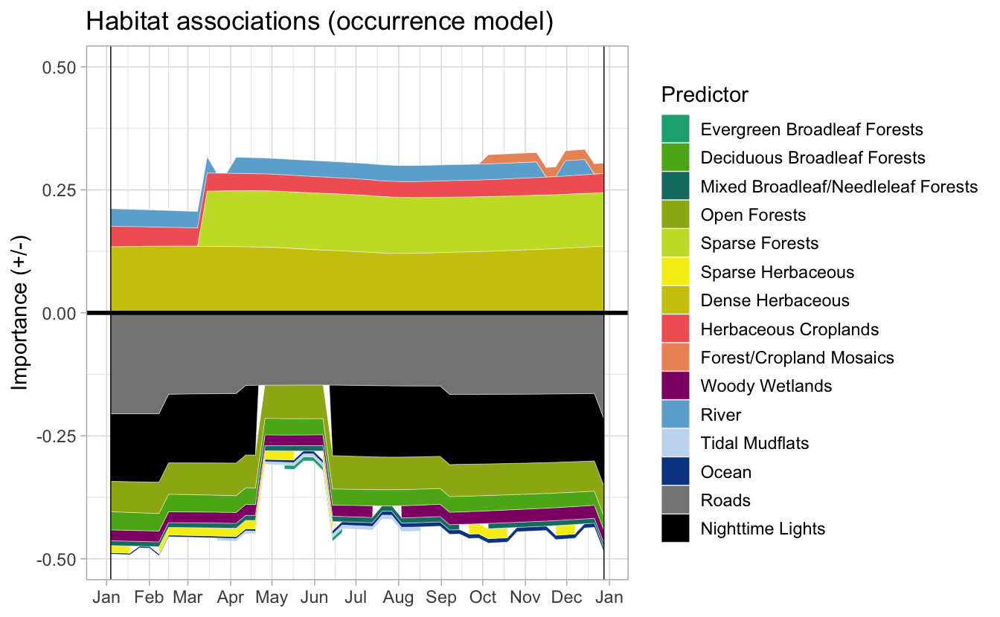

Lesson 5 AOS 2021
5.1 Objective
Covering examples specifically requested at the AOS 2021 workshop.
library(ebirdst)
library(raster)
library(sf)
library(rnaturalearth)
library(tidyverse)
library(exactextractr)5.2 Percent of population
The abundance regional stats section of the status and trends website provides estimates of the percent of the population within each state or Bird Conservation Region (BCR). Users of the data may want to calculate this percent of population for custom regions, not found on the status and trends website. As an example, let’s calculate the percent of population found in US states during each season.
Let’s start by downloading state boundaries from Natural Earth and loading the seasonal relative abundance. Here we’ll use the lr data in the interest of speed.
# loggerhead shrike seasonal abundance
abd <- get_species_path("logshr") %>%
load_raster("abundance_seasonal", res = "lr")
# border of louisiana
states <- ne_states(iso_a2 = "US", returnclass = "sf") %>%
st_transform(crs = projection(abd))Next we’ll convert the relative abundance raster into a percent of population raster by dividing by the total population across the whole range.
abd_total <- cellStats(abd, sum)
pct_pop <- abd / abd_totalFinally, we can extract all the values that fall within the given polygon and sum them to calculate the percent of population within the polygon.
state_pop <- exact_extract(pct_pop, states, fun = "sum", append_cols = "name")
#>
|
| | 0%
|
|== | 2%
|
|==== | 4%
|
|====== | 6%
|
|======== | 8%
|
|========== | 10%
|
|============ | 12%
|
|============== | 14%
|
|================ | 16%
|
|=================== | 18%
|
|===================== | 20%
|
|======================= | 22%
|
|========================= | 24%
|
|=========================== | 25%
|
|============================= | 27%
|
|=============================== | 29%
|
|================================= | 31%
|
|=================================== | 33%
|
|===================================== | 35%
|
|======================================= | 37%
|
|========================================= | 39%
|
|=========================================== | 41%
|
|============================================= | 43%
|
|=============================================== | 45%
|
|================================================= | 47%
|
|=================================================== | 49%
|
|====================================================== | 51%
|
|======================================================== | 53%
|
|========================================================== | 55%
|
|============================================================ | 57%
|
|============================================================== | 59%
|
|================================================================ | 61%
|
|================================================================== | 63%
|
|==================================================================== | 65%
|
|====================================================================== | 67%
|
|======================================================================== | 69%
|
|========================================================================== | 71%
|
|============================================================================ | 73%
|
|============================================================================== | 75%
|
|================================================================================ | 76%
|
|================================================================================== | 78%
|
|==================================================================================== | 80%
|
|====================================================================================== | 82%
|
|========================================================================================= | 84%
|
|=========================================================================================== | 86%
|
|============================================================================================= | 88%
|
|=============================================================================================== | 90%
|
|================================================================================================= | 92%
|
|=================================================================================================== | 94%
|
|===================================================================================================== | 96%
|
|======================================================================================================= | 98%
|
|=========================================================================================================| 100%
arrange(state_pop, -sum.breeding)
#> name sum.breeding sum.postbreeding_migration sum.nonbreeding sum.prebreeding_migration
#> 1 California 9.11e-02 6.55e-02 6.95e-02 7.67e-02
#> 2 Arizona 8.51e-02 7.44e-02 5.98e-02 6.17e-02
#> 3 Texas 6.21e-02 1.79e-01 2.16e-01 1.68e-01
#> 4 Nevada 5.68e-02 3.29e-02 2.11e-02 3.77e-02
#> 5 New Mexico 5.52e-02 6.48e-02 5.92e-02 6.18e-02
#> 6 Montana 3.91e-02 1.05e-02 0.00e+00 1.05e-02
#> 7 Wyoming 3.37e-02 1.12e-02 0.00e+00 1.01e-02
#> 8 Utah 3.29e-02 1.01e-02 5.53e-03 1.55e-02
#> 9 Florida 2.80e-02 2.56e-02 2.84e-02 2.73e-02
#> 10 Colorado 2.73e-02 2.25e-02 5.16e-03 2.57e-02
#> 11 Louisiana 2.50e-02 1.63e-02 2.34e-02 1.99e-02
#> 12 Idaho 1.85e-02 4.78e-03 9.04e-05 4.45e-03
#> 13 South Dakota 1.52e-02 5.61e-03 0.00e+00 4.78e-03
#> 14 Oregon 1.32e-02 7.10e-03 1.16e-04 6.14e-03
#> 15 Kansas 1.10e-02 1.14e-02 6.47e-03 1.78e-02
#> 16 Nebraska 1.07e-02 6.92e-03 1.48e-07 8.07e-03
#> 17 Oklahoma 7.90e-03 1.61e-02 2.00e-02 1.83e-02
#> 18 North Dakota 6.11e-03 1.73e-03 0.00e+00 2.18e-03
#> 19 Arkansas 6.06e-03 5.25e-03 7.98e-03 7.32e-03
#> 20 Georgia 5.94e-03 5.02e-03 6.48e-03 7.14e-03
#> 21 Mississippi 5.79e-03 4.20e-03 6.51e-03 6.26e-03
#> 22 Missouri 3.98e-03 1.98e-03 2.26e-03 2.43e-03
#> 23 Washington 2.53e-03 4.72e-04 0.00e+00 1.42e-03
#> 24 Alabama 2.11e-03 1.32e-03 1.70e-03 2.07e-03
#> 25 North Carolina 1.76e-03 1.46e-03 1.69e-03 2.22e-03
#> 26 Iowa 1.68e-03 5.64e-05 0.00e+00 1.43e-05
#> 27 South Carolina 1.63e-03 1.72e-03 2.34e-03 1.52e-03
#> 28 Tennessee 1.15e-03 5.34e-04 7.07e-04 8.69e-04
#> 29 Illinois 1.97e-04 2.99e-06 9.20e-06 9.88e-05
#> 30 Indiana 1.04e-04 1.62e-08 1.18e-06 1.67e-05
#> 31 Kentucky 9.55e-05 8.07e-05 2.23e-04 1.93e-04
#> 32 Minnesota 5.91e-05 7.41e-06 0.00e+00 1.14e-05
#> 33 Virginia 4.70e-05 1.32e-05 3.50e-05 4.48e-05
#> 34 Michigan 4.41e-06 0.00e+00 0.00e+00 2.66e-07
#> 35 West Virginia 1.75e-06 2.95e-07 2.24e-06 2.81e-06
#> 36 Wisconsin 1.73e-06 2.63e-07 0.00e+00 4.20e-07
#> 37 Maryland 7.47e-07 2.06e-07 1.03e-06 4.77e-07
#> 38 Pennsylvania 5.54e-07 1.01e-07 5.23e-07 5.51e-08
#> 39 New York 2.29e-07 3.24e-08 2.64e-10 2.08e-07
#> 40 Ohio 4.05e-08 0.00e+00 3.16e-07 4.57e-07
#> 41 Maine 0.00e+00 0.00e+00 0.00e+00 0.00e+00
#> 42 New Hampshire 0.00e+00 0.00e+00 0.00e+00 0.00e+00
#> 43 Vermont 0.00e+00 0.00e+00 0.00e+00 0.00e+00
#> 44 Alaska 0.00e+00 0.00e+00 0.00e+00 0.00e+00
#> 45 District of Columbia 0.00e+00 1.33e-08 0.00e+00 0.00e+00
#> 46 Delaware 0.00e+00 2.85e-08 3.22e-07 0.00e+00
#> 47 New Jersey 0.00e+00 1.59e-07 8.07e-10 0.00e+00
#> 48 Connecticut 0.00e+00 0.00e+00 0.00e+00 0.00e+00
#> 49 Rhode Island 0.00e+00 0.00e+00 0.00e+00 0.00e+00
#> 50 Massachusetts 0.00e+00 0.00e+00 0.00e+00 0.00e+00
#> 51 Hawaii 0.00e+00 0.00e+00 0.00e+00 0.00e+005.3 Habitat associations
As covered in lesson 4 on non-raster data, the data packages contain two types of information about the the modeled relationships between estimated occurrence and the habitat covariates used in the model. Predictor importance (PI) estimates identify the most importance predictor variables in the model. Partial dependences (PD) show the relationship between a given habitat covariate and the occurrence probability.
Let’s start by defining a region and season: Loggerhead Shrike within Louisiana during the breeding season.
# loggerhead shrike data path
sp_path <- get_species_path("logshr")
# border of louisiana
la <- ne_states(iso_a2 = "US", returnclass = "sf") %>%
filter(name == "Louisiana")
# breeding season
logshr_run <- filter(ebirdst_runs, common_name == "Loggerhead Shrike")
start_dt <- logshr_run$breeding_start
end_dt <- logshr_run$breeding_end
# ebirdst_extent object
la_breeding <- ebirdst_extent(la, c(start_dt, end_dt))Now we can look at the most important predictors:
pis <- load_pis(sp_path, ext = la_breeding)
plot_pis(pis, ext = la_breeding, by_cover_class = TRUE, n_top_pred = 25)
From this PI plot we can see that “dense herbaceous” is an important covariate, so let’s example the PD curve for that habitat type. We can find it, and all other model covariates, listed in the ebirdst_predictors data frame.
pds <- load_pds(sp_path, ext = la_breeding)
ebirdst_predictors %>%
filter(lc_class_label == "Dense Herbaceous") %>%
select(predictor_tidy, predictor_label)
#> # A tibble: 2 × 2
#> predictor_tidy predictor_label
#> <chr> <chr>
#> 1 mcd12q1_lccs1_fs_c31_1500_ed Dense Herbaceous ED
#> 2 mcd12q1_lccs1_fs_c31_1500_pland Dense Herbaceous PLAND
pd_smooth <- plot_pds(pds, "mcd12q1_lccs1_fs_c31_1500_pland", ext = la_breeding,
n_bs = 5)
We can think of the PIs and PDs telling us something about the strength and directionality of a habitat association, respectively. For example, there is a strong positive association with dense herbaceous cover. The regional habitat charts on the eBird Status and Trends website combine the PI and PD information to visualize how species associate with different habitat types throughout the year, giving both the strength and direction of that association. The function ebirdst_habitat() generates the data behind these plots for a given region.
habitat <- ebirdst_habitat(sp_path, ext = la_breeding)
habitat
#> # A tibble: 1,248 × 5
#> predictor date importance prob_pos_slope direction
#> * <chr> <dbl> <dbl> <dbl> <dbl>
#> 1 intertidal_fs_c1_1500_pland 0.0096 0.00423 0.308 NA
#> 2 intertidal_fs_c1_1500_pland 0.0288 0.00428 0.307 NA
#> 3 intertidal_fs_c1_1500_pland 0.0481 0.00433 0.308 NA
#> 4 intertidal_fs_c1_1500_pland 0.0673 0.00438 0.308 NA
#> 5 intertidal_fs_c1_1500_pland 0.0865 0.00444 0.308 NA
#> 6 intertidal_fs_c1_1500_pland 0.106 0.00451 0.308 NA
#> # … with 1,242 more rowsWe can call plot() on the output of ebirdst_habitat() to generate a habitat association chart.
plot(habitat)